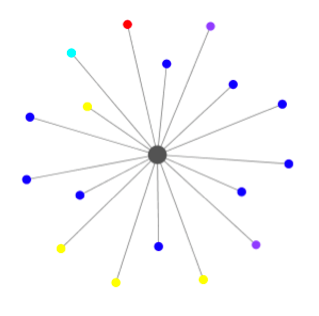
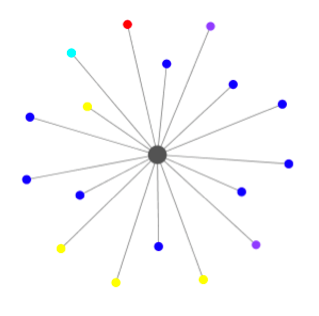

In addition to storing, organizing, and standardizing information, the use of a database also allows for the creation of new information. More specifically, after all of the identified individuals and their attributes have been added to the database, we can export selected datasets, such as specific genres of journal articles or shared occupations among collaborators.

 

In the above network graphs, we see a dynamic representation and rendering of various genres of contributions to Ocampo’s literary journal Sur (numbers 1-3). More specifically, each of the nodes here points to the specific genre of each work in the issue: essay (blue), art (yellow), letter (green), poetry (purple), review (orange), fiction (teal), and announcements (red). Since genre is an invisible aspect of most journal contributions – or at least not an attribute that is physical printed alongside each work –, this visualization exemplifies the opportunities that digital data offers for making print materials more visible and legible. Here we see that essays are the most frequent type of contribution in the first three issues of the journal (50% of the entire work), while fiction and poetry are a much smaller percentage of the overall contributions (around 10% for each). In essence, these more veiled elements in Ocampo’s print production foreground how her editorial decisions accentuated specific literary forms and cross-cultural resonances